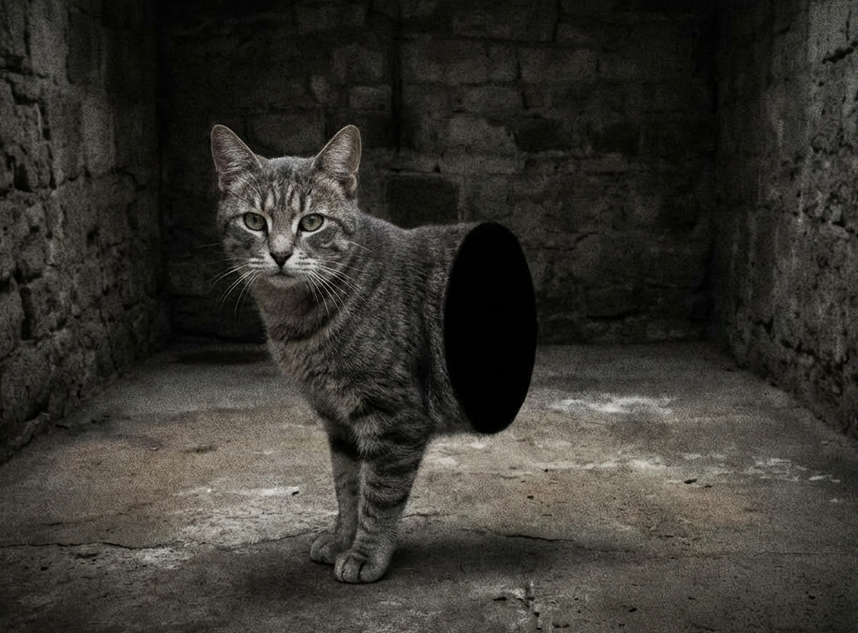

Gato Meio

Ficha Técnica:
Nome: Gato Meio
Nomes alternativos: Meio Gato, Gato Cortado, Gato do Vazio, Metade Felina
Raça: Gato
Tipo da raça: Dimensional
Nivel de ameaça: Médio
Características físicas:
- Corpo termina abruptamente logo após a caixa torácica
- Corte transversal aparenta ser um vazio negro puro
- Pelagem cinza rajada, aparência de gato comum
- Se move normalmente como se tivesse as patas traseiras
Capacidades:
- Capacidade de atravessar espaços impossíveis para gatos normais
- O vazio em seu corpo absorve todos os comprimentos de onda não visíveis
- Nunca demonstra desconforto ou dor
- Parece ter consciência de sua condição anômala
Fraquezas:
- Não possui capacidades ofensivas conhecidas
- Comportamento de gato comum, vulnerável a distrações típicas
- Queijo causa desconforto gastrointestinal severo
Como contê-lo:
Não há necessidade de contenção rigorosa. O Gato Meio é dócil e amigável. Ele pode circular livremente pelos níveis inferiores da instalação. Recomenda-se não alimentá-lo com queijo sob nenhuma circunstância.
Relato do Dr. Fenris:
Dr. Fenris foi um dos primeiros pesquisadores a estudar o Gato Meio. Ele é especialista em anomalias dimensionais.
"Quando vi o Gato Meio pela primeira vez, confesso que fiquei perturbado. Como algo pode existir pela metade? Onde está o resto dele? Tentamos de tudo - raios-X, ressonância magnética, até sondas interdimensionais. O vazio que compõe a outra metade simplesmente não existe em nosso plano. Ele não está em outro lugar. Ele simplesmente não está. O mais assustador é que ele parece feliz assim. Ronrona, brinca, e se comporta como qualquer gato. Talvez a ignorância seja uma benção."
Variações:
Não há registro de outros gatos com a mesma anomalia dimensional.
História:
A história do Gato Meio ainda está sendo documentada.